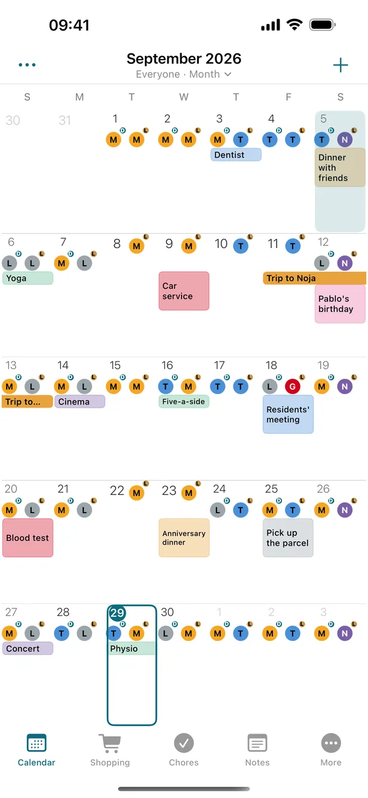
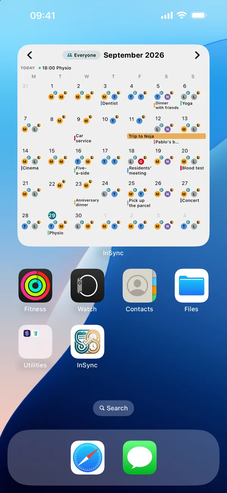
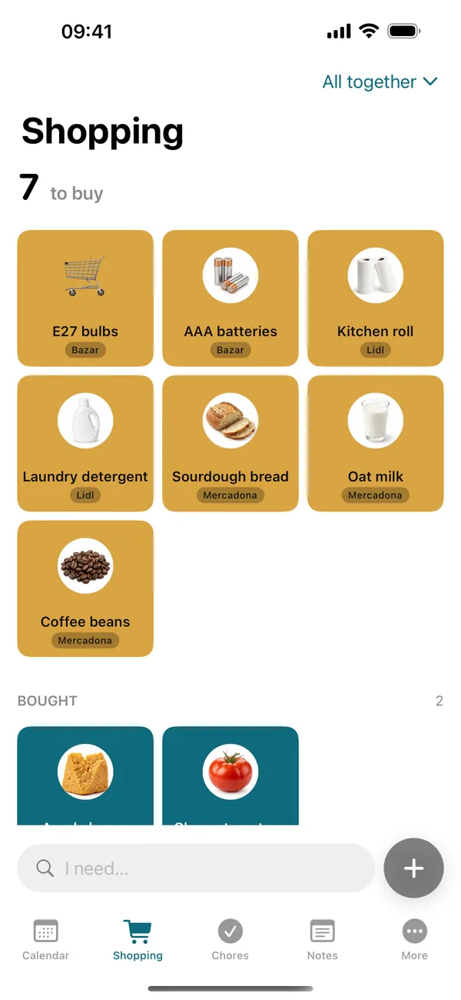

Shift calendar for iPhoneYour shifts, clear at a glance.
Add your rota once (rotating shifts, nights, on call) and the month fills itself in. See it in the calendar and on your Home Screen, with no ads. And if your partner works shifts too, you both see who's working, who's off and which days you're both off.
Download free on the App StoreFor iPhone. Android later on.
No more photos of the rota in the group chat.
Each of you adds yours once and you both see it in the same calendar. What one of you changes reaches the other in seconds, and it keeps working with no signal.



Your month, done in two minutes.
-
Add your rota
Pick a template —5 on 2 off, 4 on 2 off, 2-2-3, early, late and night— or build your own cycle, and the month fills itself in. Changing a single day is one tap.
-
Invite your partner, if you like
Send them a code. Once they join, each of you sees the other's shifts. And on your own, the calendar and the widget work just the same.
-
Look at the month
Who's working, who's off and the days you're both off, with a heart. Your hours for the month and the days off you have left, too.
For people who work shifts.
Rotating nursing shifts, a police rota, doctors on call or nights at the factory: if your hours change every week, InSync makes them clear.
- Nurses
- Healthcare assistants
- Doctors on call
- Police
- Firefighters
- Factory shifts
- Security
- Hospitality
And for their partners, who don't have to work shifts: if you work Monday to Friday, set it in one tap and it counts towards your days off together too.
Free. And Pro, if you want more.
Free
€0
- The shared calendar and your shifts
- Your partner's shifts and “Both off”
- Hours worked and days off
- Shopping and chores
- The today and week widgets
InSync Pro
Monthly or yearlyThe yearly plan starts with a free month. The App Store shows the price in your currency.
- The month, four-week and shopping widgets
- Ten ways to show your shifts
- Up to 6 people in the group and 5 outside calendars
- More trips, notes and lists, with their attachments
- One person pays and the whole group gets it
No ads on either plan.
Frequently asked questions
Can my partner see my shifts for free?
Yes. Seeing each other's shifts, the shared calendar, the shopping list and chores are free. InSync Pro is optional.
What if my partner has Android?
For now InSync is iPhone only. An Android version will come later.
Does it work with rotating shifts?
Yes. Pick a template (5 on 2 off, 4 on 2 off, 2-2-3, early/late/night) or build your own cycle, and the month fills itself in. Changing a single day is one tap.
Can I use it without a partner?
Yes. The shift calendar, hours worked, days off and the widget work just the same on your own.
How much does it cost?
It's free, with no ads. InSync Pro is optional, monthly or yearly; the yearly plan starts with a free month, and one person pays for the whole group.
What happens to my data?
No ads, your data is not sold, and it never asks for your location. If you attach a photo, its coordinates are removed before it is uploaded. All of it, with no small print, in the privacy policy.
Anything else? See support (in Spanish) or write to idanideveloper@gmail.com.
Add your rota tonight.
Tomorrow it's on your Home Screen.
Download free
For iPhone, with iOS 17 or later.